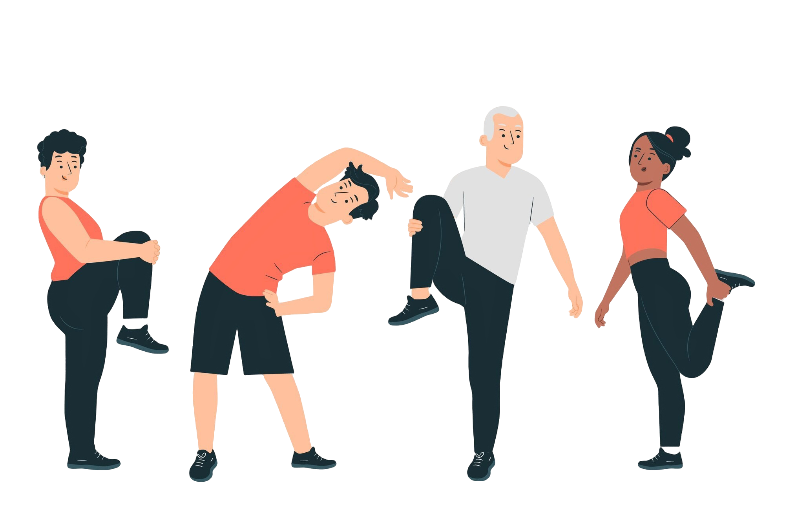
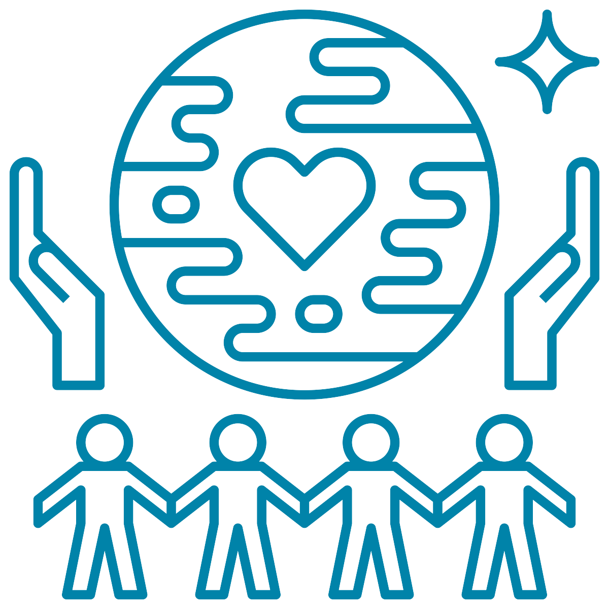

O que é Saúde?
Saúde e bem-estar são conceitos que estão diretamente relacionados com a qualidade de vida das pessoas.
A saúde é um estado de completo bem-estar físico, mental e social, e não apenas a ausência de doenças.
Já o bem-estar é um estado de equilíbrio e harmonia entre os aspectos físicos, emocionais e sociais da vida.
Saúde fisica:
A saúde física é o estado de bem-estar do corpo, que envolve a prática de atividades físicas, alimentação saudável, sono adequado e cuidados com a higiene.
Saúde mental:
A saúde mental é o estado de bem-estar emocional e psicológico, que envolve a capacidade de lidar com as emoções, o estresse, a ansiedade e os problemas do dia a dia. Cuidar da saúde mental é tão importante quanto cuidar da saúde física.

Saúde social:
A saúde social é o estado de bem-estar nas relações interpessoais e sociais, que envolve a convivência com familiares, amigos e colegas de trabalho. Manter a saúde social é fundamental para o desenvolvimento de relações saudáveis e o bem-estar emocional.
